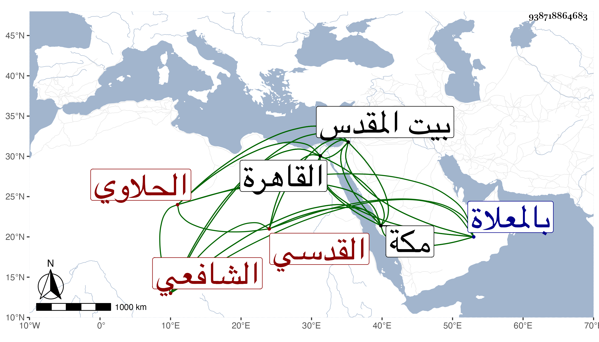

0902Sakhawi.DawLamic.ITO20230111-ara1.EIS1600.938718864683
Biography ID: 938718864683
95
محمد بن محمد بن يوسف الشمس أبو العزم القدسي الحلاوي كان لنزوله الحلاوية فيه الشافعي نزيل مكة وهو بكنيته أشهر . ولد سنة تسع عشرة وثمانمائة ببيت المقدس ونشأ به فأخذ عن ابن رسلان وماهر والعز القدسي وغيرهم ثم قدم القاهرة وأخذ بها أيضا عن جماعة كابن حسان ولازم إمام الكاملية واختص به وقرأ عليه بحيث عرف به وسمع على شيخنا وغيره بالقاهرة وببيت المقدس معنا وقبلنا على التقي القلقشندي وابن جماعة بل سمع رفيقا لابن أبي شريف على الزين الزركشي في صحيح مسلم ووصفه رفيقه بالإمام العالم الصالح وأجاز له جماعة كثيرون باستدعائه أيضا وفضل في العربية وكتب على الجرومية شرحا ، وكان ممن قام في كائنة الكنيسة بحيث كثر تطلبه من الدولة وخشي على نفسه من المقابلة كغيره فاختفى إلى أن نجا بنفسه وسافر لمكة فقطنها على طريقة حسنة من إقراء النحو وغيره للمبتدئين متقنعا بما كان يبر به من التجار ونحوهم حتى مات في يوم الخميس سادس عشرى المحرم سنة ثلاث وثمانين ودفن بالمعلاة ، وكان لا بأس به دينا وسكونا وعقلا لكن وجد له من النقد والكتب ما لم يكن في الظن رحمه الله وعوضه الجنة .
